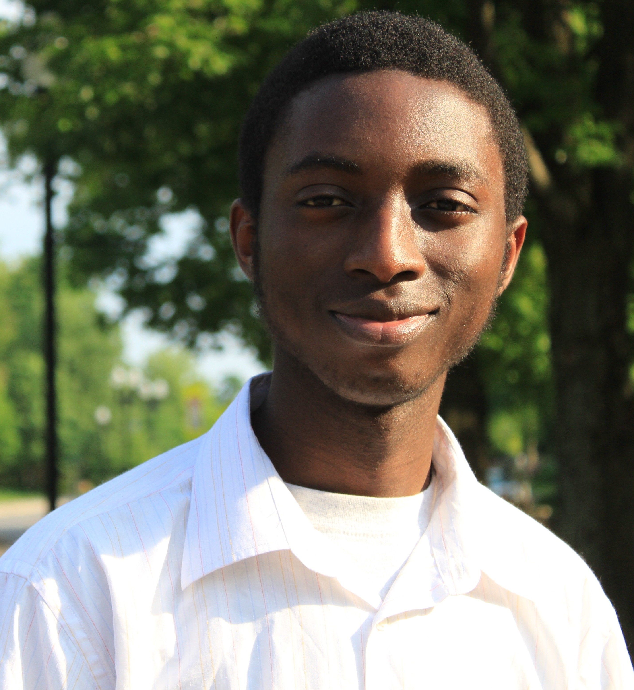

Home
Hello,
Welcome to my e-portifolio. My name is Vernon Zidana and I am the last born son in my African family of nine. I was born and raised in Blantyre City, Malawi, Southern Africa.
After I finished high school, I applied and was recruited to the United States Achievers Program(USAP). USAP helped me find and apply to American colleges and universities that offered financial aid to international students. Now I give back to USAP in every way that I can so that others like me might have a chance to realize their dreams of getting a world class college education.
I came to America in 2010 for my college education. I am currently studying at The College of Wooster In Ohio, USA. So far I like the life here in America and I thank God for giving me this opportunity.
To me this website is a resource that will allow me to reflect on my experiences while I am on the journey of authoring my life both inside and outside of my college classrooms.
I sincerely hope that you will find this webspace informative and exciting to surf.
Best,
Vernon